This is our first Navier-Stokes example problem. We discuss the non-dimensionalisation of the equations and their implementation in oomph-lib, and demonstrate the solution of the 2D driven cavity problem.
The Navier-Stokes equations
In dimensional form the 2D [3D] Navier-Stokes equations (in cartesian coordinates 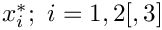) are given by the momentum equations
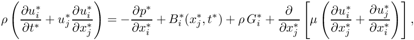
and the continuity equation
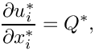
where we have used index notation and the summation convention.
Here, the velocity components are denoted by  , the pressure by
, the pressure by  , and time by 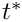, and we have split the body force into two components: A constant vector 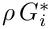 which typically represents gravitational forces; and a variable body force, 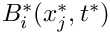.
, and time by 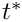, and we have split the body force into two components: A constant vector 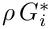 which typically represents gravitational forces; and a variable body force, 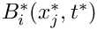.  is a volumetric source term for the continuity equation and is typically equal to zero.
is a volumetric source term for the continuity equation and is typically equal to zero.
We non-dimensionalise the equations, using problem-specific reference quantities for the velocity, 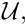 length, 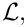 and time, 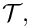 and scale the constant body force vector on the gravitational acceleration,  so that
so that
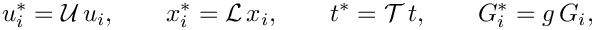
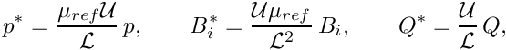
where we note that the pressure and the variable body force have been non-dimensionalised on the viscous scale.  and
and  (used below) are reference values for the fluid viscosity and density, respectively. In single-fluid problems, they are identical to the viscosity
(used below) are reference values for the fluid viscosity and density, respectively. In single-fluid problems, they are identical to the viscosity  and density
and density  of the (one and only) fluid in the problem.
of the (one and only) fluid in the problem.
The non-dimensional form of the Navier-Stokes equations is then given by
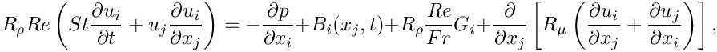
and
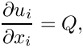
where the dimensionless parameters
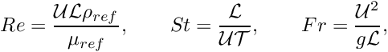
are the Reynolds number, Strouhal number and Froude number respectively. 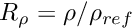 and 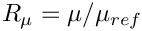 represent the ratios of the fluid's density and its dynamic viscosity, relative to the density and viscosity values used to form the non-dimensional parameters (By default, 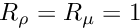; other values tend to be used in problems involving multiple fluids).
The above equations are typically augmented by Dirichlet boundary conditions for (some of) the velocity components. On boundaries where no velocity boundary conditions are applied, the flow satisfies the "traction free" natural boundary condition  (We refer to another example for an illustration of how to apply traction boundary conditions for the Navier-Stokes equations.)
(We refer to another example for an illustration of how to apply traction boundary conditions for the Navier-Stokes equations.)
If the velocity is prescribed along the entire domain boundary, the fluid pressure  is only determined up to an arbitrary constant. This indeterminacy may be overcome by prescribing the value of the pressure at a single point in the domain (see exercise).
is only determined up to an arbitrary constant. This indeterminacy may be overcome by prescribing the value of the pressure at a single point in the domain (see exercise).
Implementation
The elements
oomph-lib provides two LBB-stable isoparametric Navier-Stokes elements that are based on the QElement<DIM,3> family of geometric finite elements. They are nine-node quadrilateral (for DIM=2), and 27-node brick (for DIM=3) elements in which the mapping between local and global (Eulerian) coordinates is given by
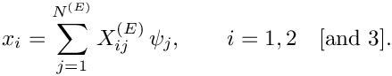
Here 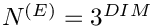 is the number of nodes in the element,  is the
is the  -th global (Eulerian) coordinate of the
-th global (Eulerian) coordinate of the  -th
-th Node in the element, and the  are the element's geometric shape functions, defined in the
are the element's geometric shape functions, defined in the QElement<DIM,3> class.
In both elements the velocity components 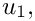 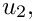 [and  ] are stored as nodal values and the geometric shape functions are used to interpolate the velocities inside the element,
] are stored as nodal values and the geometric shape functions are used to interpolate the velocities inside the element,
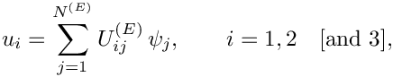
where  is the -th velocity component at -th
is the -th velocity component at -th Node in the element. Nodal values of the velocity components are accessible via the access function
which returns the i-th velocity component stored at the element's j-th Node.
The two elements differ in the way in which the pressure is represented:
Crouzeix-Raviart elements
In oomph-lib's QCrouzeixRaviartElements the pressure is represented by,
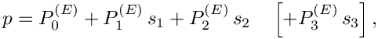
where the 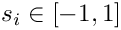 are the element's local coordinates. This provides a discontinuous, piecewise bi-[tri-]linear representation of the pressure in terms of 3 [4] pressure degrees of freedom per element. Crouzeix-Raviart elements ensure that the continuity equation is satisfied within each element.
The pressure degrees of freedom are local to the element and are stored in the element's internal Data. They are accessible via the member function
which returns the value of the j-th pressure degree of freedom in this element.
Each Node in a 2D [3D] Crouzeix-Raviart element stores 2 [3] nodal values, representing the two [three] velocity components at that Node.
Taylor-Hood elements
In oomph-lib's QTaylorHoodElements the pressure is represented by a globally-continuous, piecewise bi-[tri-]linear interpolation between the pressure values 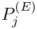 that are stored at the elements' 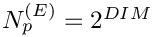 corner/vertex nodes,
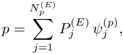
where the 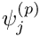 are the bi-[tri-]linear pressure shape functions.
The first 2 [3] values of each Node in a 2D [3D] Taylor-Hood element store the two [three] velocity components at that Node. The corner [vertex] nodes store an additional value which represents the pressure at that Node. The access function
returns the nodal pressure value at the element's j-th corner [vertex] Node.
In sufficiently fine meshes, Taylor-Hood elements generate a much smaller number of pressure degrees of freedom than the corresponding Crouzeix-Raviart elements. However, Taylor-Hood elements do not conserve mass locally.
Non-dimensional parameters and their default values
The Reynolds number, Strouhal number, inverse-Froude number, density ratio and viscosity ratio are assumed to be constant within each element. Their values are accessed via pointers which are accessible via the member functions re_pt() for 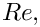 re_st_pt() for 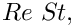 re_invfr_pt() for 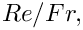 density_ratio_pt() for  and
and viscosity_ratio_pt() for 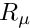.
By default the pointers point to default values (implemented as static member data in the NavierStokesEquations class), therefore they only need to be over-written if the default values are not appropriate. The default values are:
- Default Reynolds number:
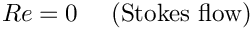
- Default Womersley number (product of Reynolds and Strouhal number):
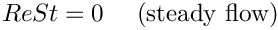
- Default product of Reynolds and inverse Froude number (a measure of gravity on the viscous scale)
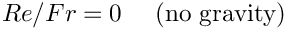
- Default viscosity ratio:
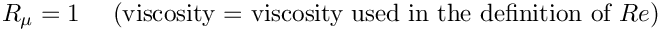
- Default density ratio:
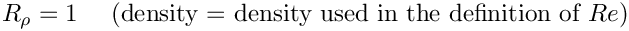
We use the same approach for the specification of the body force vector 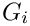, accessible via the function g_pt (), the variable body force 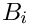, accessible via the function pointer body_force_fct_pt(), and the volumetric source function  , accessible via the function pointer
, accessible via the function pointer source_fct_pt(time,x). By default the (function) pointers are set such that
- Default gravity vector:
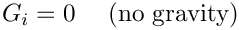
- Default body force function:
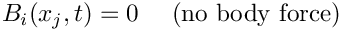
- Default volumetric source function
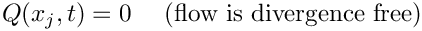
The example problem
We will illustrate the solution of the steady 2D Navier-Stokes equations using the well-known example of the driven cavity.
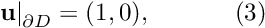 on the bottom boundary, 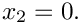 |
![\[ Re\phantom{i}u_j\frac{\partial u_i}{\partial x_j} = - \frac{\partial p}{\partial x_i} + \frac{\partial }{\partial x_j} \left( \frac{\partial u_i}{\partial x_j} + \frac{\partial u_j}{\partial x_i} \right), \ \ \ \ \ \ \ \ \ \ (1) \]](form_60.png)
![\[ \frac{\partial u_i}{\partial x_i} = 0, \]](form_61.png)
![\[ \left. \mathbf{u}\right|_{\partial D}=(0,0), \ \ \ \ \ \ \ \ \ \ (2) \]](form_63.png)
Results
Crouzeix-Raviart elements
The figure below shows "carpet plots" of the velocity and pressure fields as well as a contour plot of the pressure distribution with superimposed streamlines. The velocity vanishes along the entire domain boundary, apart from the bottom boundary  where the moving "lid" imposes a unit tangential velocity which drives a large vortex, centred at 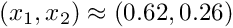. The discontinuity in the velocity boundary conditions creates pressure singularities at
where the moving "lid" imposes a unit tangential velocity which drives a large vortex, centred at 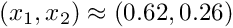. The discontinuity in the velocity boundary conditions creates pressure singularities at  and
and  . The rapidly varying pressure in the vicinity of these points clearly shows the discontinuous pressure interpolation employed by the Crouzeix-Raviart elements.
. The rapidly varying pressure in the vicinity of these points clearly shows the discontinuous pressure interpolation employed by the Crouzeix-Raviart elements.

Taylor-Hood elements
The next figure shows the corresponding results obtained from a computation with QTaylorHoodElements. The pressure plot illustrates how the interpolation between the corner nodes creates a globally continuous representation of the pressure.

Note that in both simulations, the flow field is clearly under-resolved near the ends of the "lid". In another example we will demonstrate the use of spatial adaptivity to obtain much better solutions for this problem.
Global parameters and functions
The Reynolds number is the only non-dimensional parameter needed in this problem. As usual, we define it in a namespace:
The driver code
We start by creating a DocInfo object to store the output directory and the label for the output files.
We build the problem using QCrouzeixRaviartElements, solve using the Problem::newton_solve() function, and document the result before incrementing the label for the output files.
Finally, we repeat the process with QTaylorHoodElements.
The problem class
The Problem class for our steady Navier-Stokes problem is very similar to those used for the steady scalar problems (Poisson and advection-diffusion) that we considered in previous examples. We provide a helper function fix_pressure(...) which pins a pressure value in a specified element and assigns a specific value.
No actions are performed after the solution is found, since the solution is documented in main. However, before solving, the boundary conditions must be set.
Finally, we provide an access function to the specific mesh and define the post-processing function doc_solution(...).
The problem constructor
Since this is a steady problem, the constructor is quite simple. We begin by building the mesh and pin the velocities on the boundaries.
Next we pass a pointer to the Reynolds number (stored in Global_Physical_Variables::Re) to all elements.
Since Dirichlet conditions are applied to both velocity components on all boundaries, the pressure is only determined up to an arbitrary constant. We use the fix_pressure(...) function to pin the first pressure value in the first element and set its value to zero.
Finally, the equation numbering scheme is set up, using the function assign_eqn_numbers().
Post-processing
As expected, this member function documents the computed solution.
Comments and Exercises
The stress-divergence form
As discussed in the introduction, by default oomph-lib's Navier-Stokes elements use the stress-divergence form of the momentum equations,
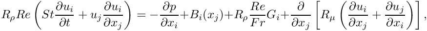
as this form is required in problems with free surfaces or problems in which traction boundary conditions are applied.
If the flow is divergence free ( 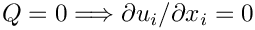), the viscous term may be simplified to
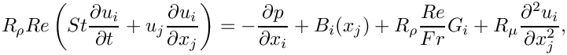
assuming that the viscosity ratio remains constant
This simpler form of the equations can be used to solve problems that do not incorporate traction boundaries or free surfaces. We illustrate the use of these equations in another example.
Exercises
- Compare the pressure distributions obtained with Taylor-Hood elements to that computed with Crouzeix-Raviart elements. Why do they differ? [Hint: Consider how the pressure is represented in the two elements.]
- Confirm that the velocities stored at boundary nodes must be pinned. Investigate what happens if you do not apply any velocity boundary conditions [Hint: You should still be able to
compute a solution – what does this solution represent?] - Investigate what happens when no pressure value is fixed.
Source files for this tutorial
- The source files for this tutorial are located in the directory:
demo_drivers/navier_stokes/driven_cavity/ - The driver code is:
demo_drivers/navier_stokes/driven_cavity/driven_cavity.cc
PDF file
A pdf version of this document is available.